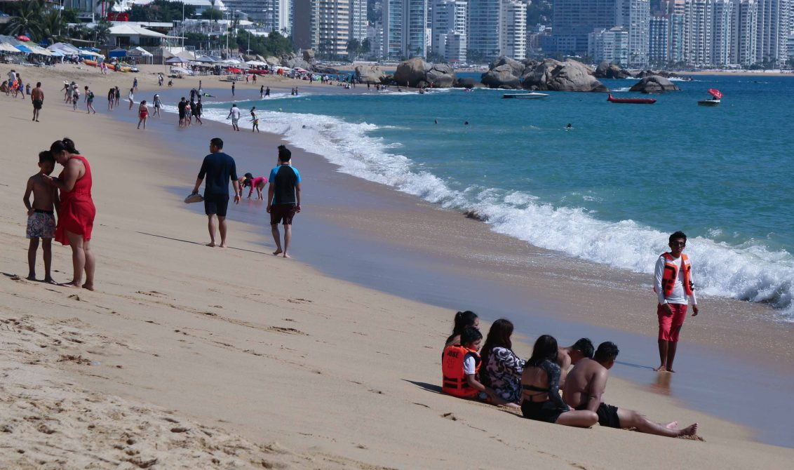

Blog

Somos estudiantes de Ingeniería de Software del Tecnológico Nacional de México Campus Acapulco, comprometidos con el medio ambiente y la participación ciudadana.
GreenPort es una plataforma digital desarrollada con tecnologías web, orientada a optimizar la gestión y el reporte ciudadano de residuos sólidos urbanos y costeros, con enfoque particular en la ciudad de Acapulco.
Acapulco, Guerrero, México
+52 744 107 4403
info@greenport.com
Copyright © GreenPort. Todos los derechos reservados.
Acapulco, Guerrero, México — Plataforma Ciudadana Ambiental